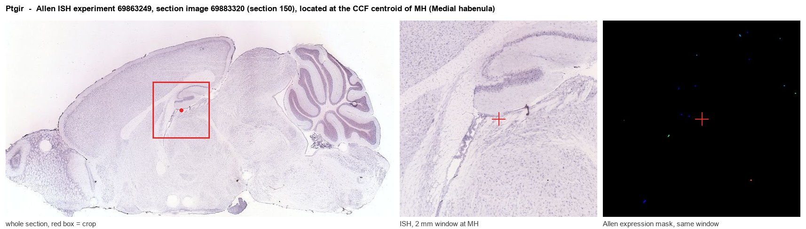
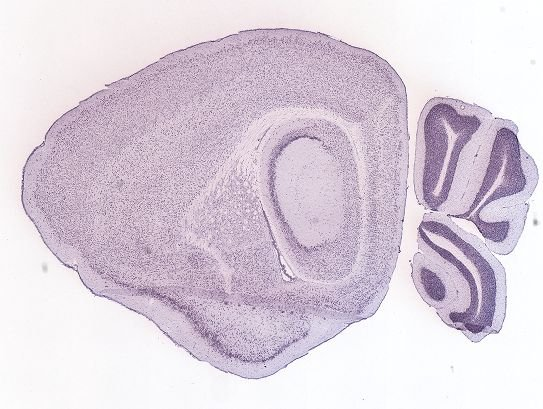
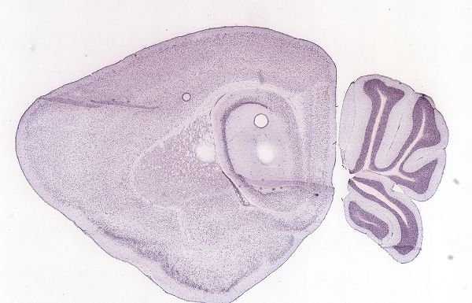
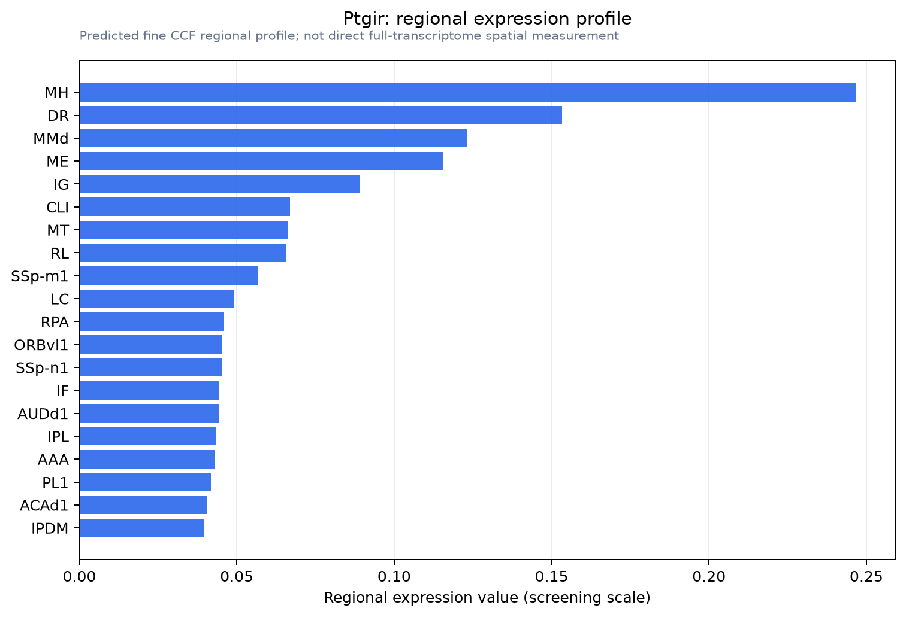

Ptgir
Prostacyclin receptor (Prostaglandin I2 receptor) (PGI receptor) (PGI2 receptor) (Prostanoid IP receptor)
Spatial tier: STRICT_EXCLUSIVE · Class: GPCR · Top region: MH (Medial habenula) · Positive regions: 8/554
48.5Discovery Score
36.3Targetability Score
CEvidence grade C
What this means: Ptgir: predicted fine-region profile is strict-exclusive, with 8 positive regions out of 554 (limit 12); direct spatial validation is required.
Function in MH: evidence, prediction, innovation
- Gene function
- PTGIR encodes the prostacyclin (IP) receptor, a class-A GPCR for prostaglandin I2. It couples mainly to Gs, raising cAMP and activating PKA, which in platelets and vascular smooth muscle produces anti-aggregation and vasodilation. It is the target of a mature clinical drug class including iloprost, treprostinil and selexipag.
- Region function
- The medial habenula is an epithalamic relay whose cholinergic/substance P neurons project almost exclusively through the fasciculus retroflexus to the interpeduncular nucleus. This MHb-IPN axis sets nicotine aversion and withdrawal, fear memory expression, anxiety and negative affect.
- Published in this region
- inferred No region-specific literature found. The closest related finding is that IP receptors have a demonstrated central nociceptive role: Doi et al. 2002 (Neuroreport) showed that peripheral inflammation induces spinal IP receptor expression and that central prostacyclin signalling contributes to inflammatory pain.
- Predicted function
- Prediction: a Gs-coupled prostacyclin receptor in MHb would give inflammatory prostanoid signalling a direct handle on habenular cAMP, opposing the PDE2A/natriuretic-peptide brake documented at the same terminals and thereby increasing glutamate release onto the IPN. This makes PTGIR a plausible molecular bridge between peripheral inflammation and the habenular hyperactivity seen in inflammation-associated depression. Systemic or intra-MHb iloprost should increase MHb-IPN transmission and aversive behaviour; Ptgir knockout or RO1138452 should blunt inflammation-induced increases in habenular activity.
- Innovation
- ★★★★★ 5/5 A completely unstudied receptor in this nucleus that nonetheless has clinically approved agonists and antagonists, making a causal test cheap and fast.
- Tools
- Ptgir knockout mice; agonists iloprost, cicaprost, treprostinil and the non-prostanoid selexipag (all brain-penetrant to varying degrees); selective antagonist RO1138452; commercial IP receptor antibodies.
- References
Direct evidence located at the region

Allen ISH experiment 69863249, section image 69883320 (section 150): the section that contains the CCF centroid of Medial habenula according to the Allen image-to-atlas alignment (reference_to_image), with a 2 mm window around that point. Left: whole section, red box = window. Middle: ISH signal. Right: Allen's expression-mask view of the same window. open this image in the Allen viewer
Look it up yourself: Allen Mouse Brain ISH for PtgirAllen reference atlas: MH (structure 483)ABC Atlas MERFISH viewer(in the ABC Atlas choose dataset MERFISH-C57BL6J-638850-CCF, colour cells by gene "Ptgir" or by parcellation_substructure "MH")All genes confined to MH + 3-D brain
Direct spatial evidence
MERFISH REGION LOCATOR

DIRECT ALLEN ISH

DIRECT ALLEN ISH

Regional expression figure

Predicted WMB × fine-CCF profile; not direct full-transcriptome spatial measurement.
Spatial profile
Evidence and specificity
- Evidence status
- PREDICTED_FINE
- Direct sources
- None; predicted localization only
- Exclusive threshold
- 12 positive regions out of 554
- Spatial specificity
- 0.336
- Top-region fraction
- 0.109
- Filter status
- PASS
Interpretation limits
- Cell-type-to-region projection is imputed expression, not direct spatial measurement.
- Adult reference atlases do not establish stability across age, sex, strain, state, or disease.
- Transcript abundance does not guarantee protein abundance or genetic-tool performance.